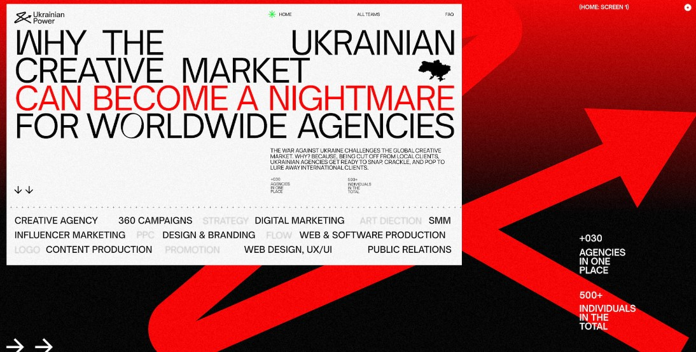

Ukrainian Power: Showcase of Ukrainian creative agencies
The full-scale war against Ukraine takes away a lot: lives, peace, comfort, and resources. But it can't take
away our drive to resist and rebuild Ukraine's economy for the win.
Ukrainian Power is the project that unites the
country's best creative forces that were left with little to no local clients. And now, to stay afloat, they
are forced to fully enter the global market.
Our mission was to help Ukrainian creative teams to make a smooth transition into the global industry. As well as to call international businesses to either partner with Ukrainian talent or to get ready to compete with it. The message may strike as provocative and even a bit aggressive. But it perfectly conveys how determined creatives are to work at 202% to keep their teams, provide for their families, and simply survive.
With this idea at the core, we launched a digital directory of Ukrainian agencies of various specializations for foreign businesses to choose from. It exclusively includes talent that proved their expertise and won international awards.
The website shows the international community what Ukrainian creatives go through and offers partnerships as a way to help Ukraine. We included 30+ Ukrainian agencies that can now have regular income from abroad" — Kyrylo Lazarev, CEO of Lazarev.agency
Design:
Creative Directory
The website welcomes visitors with a catalog of Ukrainian agencies. The dynamic layout of companies is entirely random — we did it to create equal conditions for each of them. To enhance the site experience, we added team previews and filters for a quick search.
When exploring a particular agency, the user goes to its page and can discover all the necessary information. Our focus on interactivity and engagement allows each talent to tell its story with maximum dynamics and minimum words. We added a hover effect showcasing agencies' show reels and highlights. The same goes with their awards to create some playful vibes.
Ukrainian reality and creative potential
To build emotional connection with the audience on the About page, we went for visual design paired with the content flow. Red accents in a headline and text blocks express emotional pressure. Videos with war footage address Ukrainians' reality and their motivation to work for survival.
Having passed this block, people stop at a choice point — to work with Ukrainian agencies and make them valuable assets or to compete. We made animated circles with 3D elements for interaction plus a tiny detail — a blurred hover effect to emphasize the website's primary purpose — partnership.

FAQ Page
The page provides users with the answers to questions they might have about our project. We also wanted to motivate other Ukrainian agencies to join the initiative, so we added a Google form for them to apply.
Cross-device accebility
We made sure to fine-tune users' search experience and deliver the content regardless of the device. So people can explore the website in their comfort via smartphones, tablets, and desktops.
Technologies
We developed the website in our go-to — the Webflow no-code tool. To create the desired effects, we took advantage of the platform's opportunities, combined with other technologies like JavaScript code and other libraries on the list below.
CMS filter Finsweet multi-filtration helped us create a no-code filter system so that users could select agencies by preferred categories.
Playes JS by Vimeo we used it for the entire video content on the website. In addition, the library helped us implement Vimeo video launch with a click and hover.
About
Lazarev.agency is a Ukraine-based team of UX strategists, UI/UX, Product & Motion designers, and business analysts working closely to build user experience for early-stage startups and well-known companies.
IAMEDIA is a creative communication agency from Ukraine that focuses on creative business solutions, efficiency and quality of ideas implementation.
Other articles in Blog
Vote for Site of the Month August 2022 and Win a Free Professional Profile in Our Designer's Directory
Unleashing Your Best Version by Victor Work Wins SOTM July 2022
Case Study: Special website to celebrate SIRUP's 5th anniversary by tote inc.
Getty Persepolis Reimagined by Media.Monks Wins Site of the Month June 2022
Website Elements Kit: Readymag plays with the limits to encourage invention